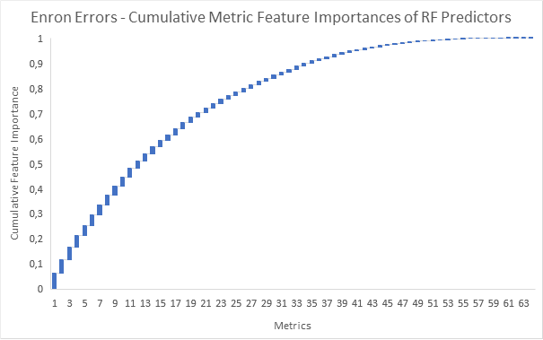
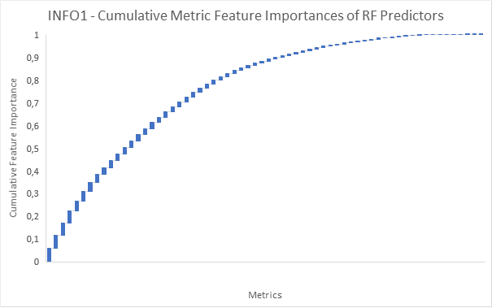
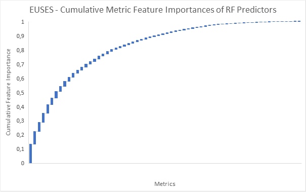
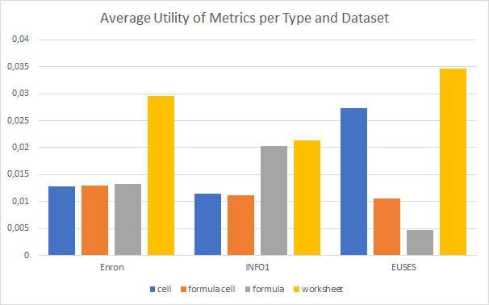
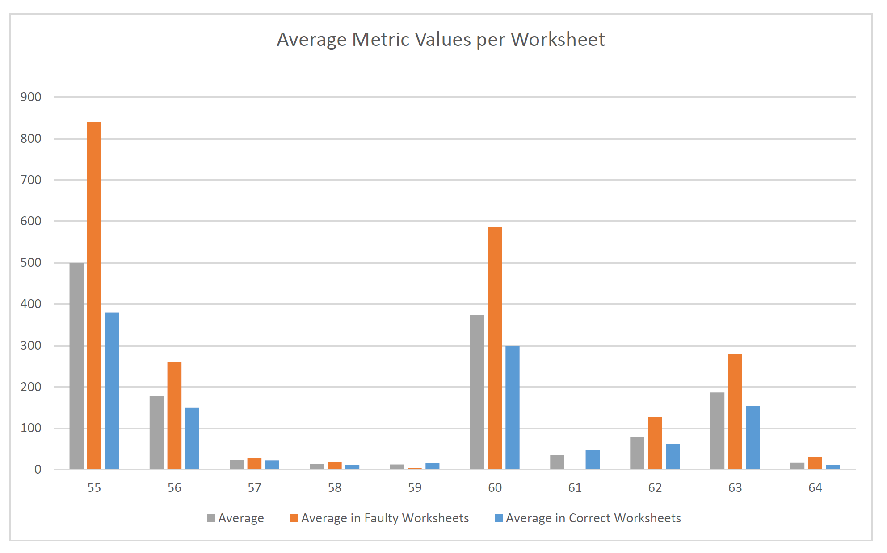
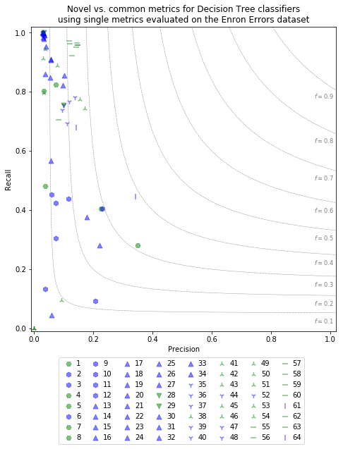
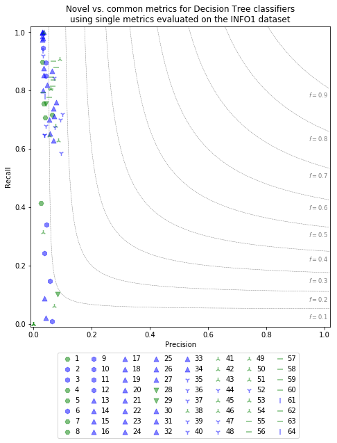
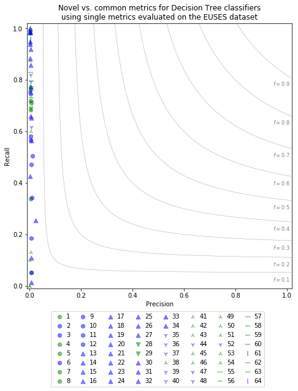

In Study 3, we investigate the effect of feature selection on the performance of learnd prediction models for the given classification task. In addition to the results shown in the paper, we also investigated the ranking of feature importances of the different metrics of our catalog based on trained Random Forest classifiers. Random Forest models use a number of Decision Trees to infer predictions. For this inferrence, each individual trained Decision Tree makes a succession of choices based on the value of individual features (i.e. metrics). The more influence a feature has on this decision process (i.e., the more often often it is used to infer a classification), the higher this feature's feature importance score is. Trained Random Forest models of the sklearn framework provide a list of quantified feature importance scores for each metric used in our evaluation. We determined the most important features for each of the datasets within a 10x10 cross-valdiation scheme, allowing a number of further analysis.
First, we determined a number of feature importance rankings, based on different criteria:
Second, we used waterfall plots to visualize for each dataset the cumulative feature importance contribution of individual metrics, ranked by each metric's relative contributions.
Third, we compared the average metric utilities of metrics of the four different metric categories (cell, formula cell, formula, worksheet) for each dataset.
Note that some metrics focus on spreadsheet features that are not used in certain datasets. Those metrics consequently do not contribute to any prediction and thus have a feature importance of 0. For example, Metric 37, Decision count, counts the number of AND and OR predicates in a formulas. The Enron Errors corpus, however, does not make use of those predicates, causing the feature importance of this metric to be 0.
Lastly, we investigated the noteworthy performances of worksheet and novel metrics along additional analyses. For worksheet metrics, we calculated the average measures for worksheet metrics for the cases of (1) all worksheets, (2) faulty worksheets, and (3) correct worksheets of the Enron Errors dataset. For novel metrics, we compared the performance of Decision Trees traind for individual common (blue) and novel (green) metrics on the various datasets.
In terms of metric types, we observe that all types of metrics appear in the respective top-10 rankings. This finding is also supported by the average metric utility evaluation per category: metrics of all types show to be relevant in all datasets. This indicates a pronounced diversity of the prevalent faults, which necessitates a similar diverse set of metrics for successful categorization.
Worksheet metrics are noticeably common within the top-10 lists (3, 6, and 4 entries respectively), and also prove the highest utility ratings per category in all examined datasets. In particular, metrics 56, Number of formula cells, 60, Predecessors, and 63, Successors, are part of all three top-10 lists. Worksheet metrics, as opposed to the other types, measure properties of the worksheet a given cell is located in. The high importance of such metrics reinforces the observation that bigger and more complicated worksheets are more likely to contain faults. The comparison of average measures for worksheet metrics in Enron Errors supports this conjecutre, where six out of ten metrics depicted significantly higher average readings for worksheets that contain faults. Respective measures of worksheet properties thus provide a good first estimate for the likelihood of the individual cells of the worksheet being faulty.Novel metrics were also commonly represented in the top-10 lists (6, 7, and 4 entries respectively). This is a noteworthy observation, as only 26 of the 64 measures are considered novel. A partial explanation of this finding is that worksheet models performed well, and most of the worksheet models are considered novel contributions. However, novel measures that are not worksheet related proved to be important for the prediction task as well. Indeed, comparison of the individual prediction performance of common and novel metrics shows that most of our novel contributions outperform many of the common measures in the catalog. As combined ML models rely on distinctive measures for accurate predictions, many novel metrics are assessed as more important than their competitors.
| # | Score | Metric No | Name | Calculated for | Novel |
|---|---|---|---|---|---|
| 1 | 0,056 | 9 | Standard deviation column | Cell | No |
| 2 | 0,053 | 56 | Number of formula cells | Worksheet | Yes |
| 3 | 0,041 | 60 | Predecessors | Worksheet | Yes |
| 4 | 0,037 | 10 | Standard deviation row | Cell | No |
| 5 | 0,036 | 63 | Successors | Worksheet | Yes |
| 6 | 0,036 | 34 | Similar formulas | Formula cell | No |
| 7 | 0,033 | 38 | Length of formula | Formula | Yes |
| 8 | 0,032 | 42 | Number of binary operators | Formula | Yes |
| 9 | 0,032 | 1 | Column | Cell | Yes |
| 10 | 0,031 | 47 | Number of operands | Formula | No |
| # | Borda | Metric No | Name | Calculated for | Novel |
|---|---|---|---|---|---|
| 1 | 169 | 56 | Number of formula cells | worksheet | Yes |
| 2 | 165 | 1 | Column | Cell | Yes |
| 3 | 164 | 34 | Similar formulas | Formula cell | No |
| 4 | 164 | 63 | Successors | Worksheet | Yes |
| 5 | 162 | 60 | Predecessors | Worksheet | Yes |
| 6 | 159 | 58 | Unique formulas | Worksheet | Yes |
| 7 | 158 | 30 | Column reference spreading | Formula cell | No |
| 8 | 158 | 55 | Cells | Worksheet | Yes |
| 9 | 154 | 10 | Standard deviation row | Cell | No |
| 10 | 152 | 57 | Columns | Worksheet | Yes |
| # | Score | Metric No | Name | Calculated for | Novel |
|---|---|---|---|---|---|
| 1 | 0,042 | 63 | Successors | Worksheet | Yes |
| 2 | 0,041 | 56 | Number of formula cells | Worksheet | Yes |
| 3 | 0,040 | 60 | Predecessors | Worksheet | Yes |
| 4 | 0,040 | 9 | Standard deviation column | Cell | No |
| 5 | 0,037 | 40 | Maximal nesting level | Formula | No |
| 6 | 0,037 | 34 | Similar formulas | Formula cell | No |
| 7 | 0,036 | 64 | Successors in other worksheets | Worksheet | No |
| 8 | 0,036 | 47 | Number of operands | Formula | No |
| 9 | 0,036 | 30 | Column reference spreading | Formula cell | No |
| 10 | 0,034 | 42 | Number of binary operators | Formula | Yes |







